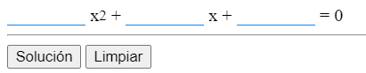

Acerca de Mí
Hola, soy David, un estudiante de un Ciclo Formativo de Desarrollo Web en el Instituto Zaidin Vergeles. En esta página encontrarás información sobre mis proyectos, mis intereses y cómo puedes contactarme.
Me encanta trabajar en proyectos que desafían mi creatividad y habilidades, y estoy entusiasmado por conectar con personas con ideas similares.

Habilidades
Proyectos
Ecuacion 2º Grado
Opiniones
"David es alumno muy creativo y siempre entrega proyectos de calidad."
Profesorado Zaidín Vergéles
"Es fascinante como trabaja este alumno."